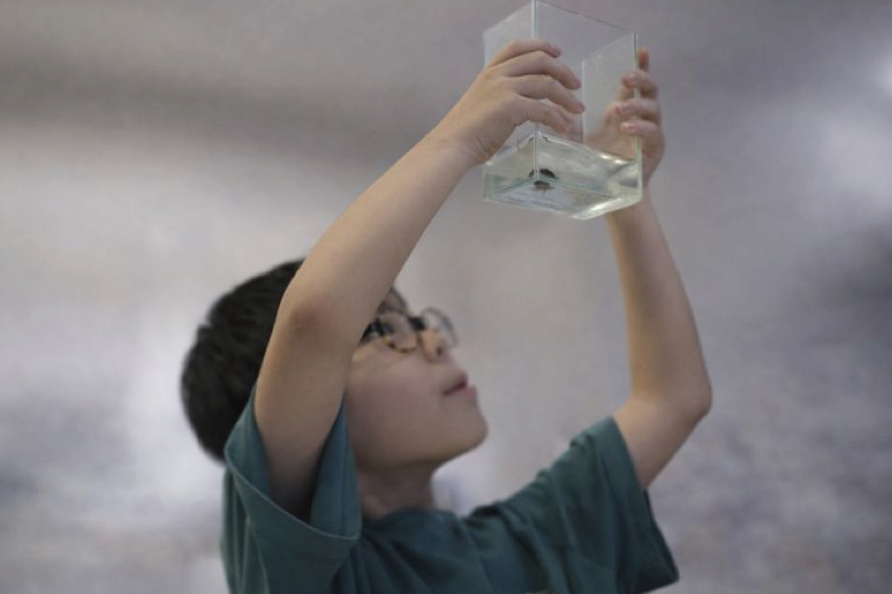
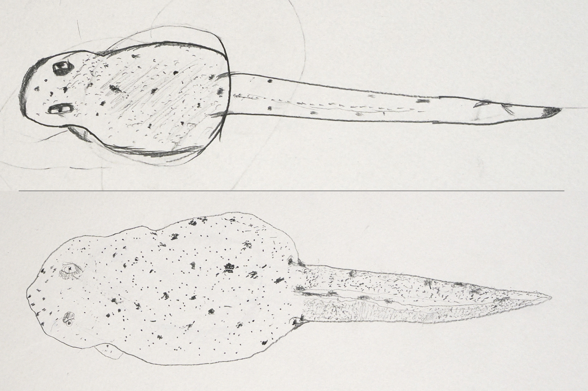
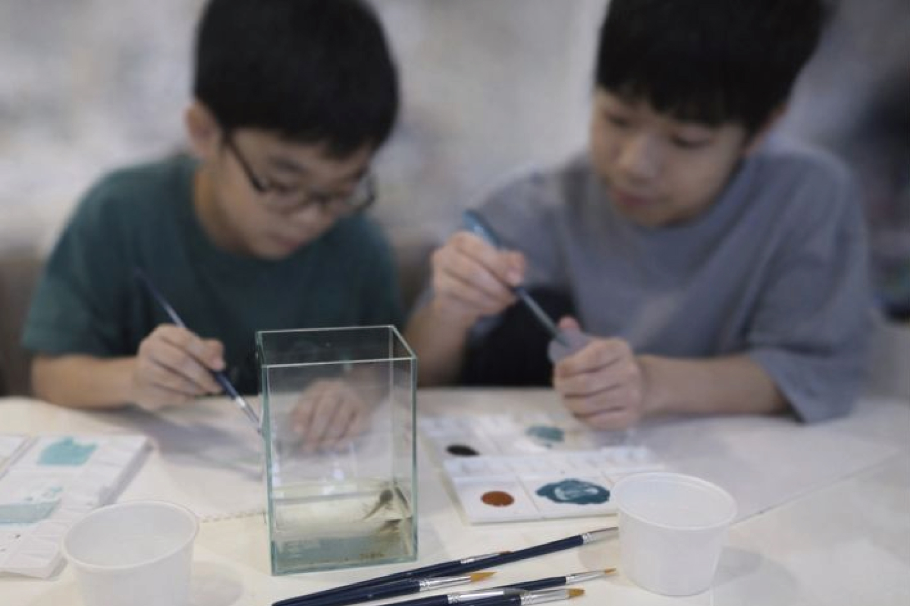
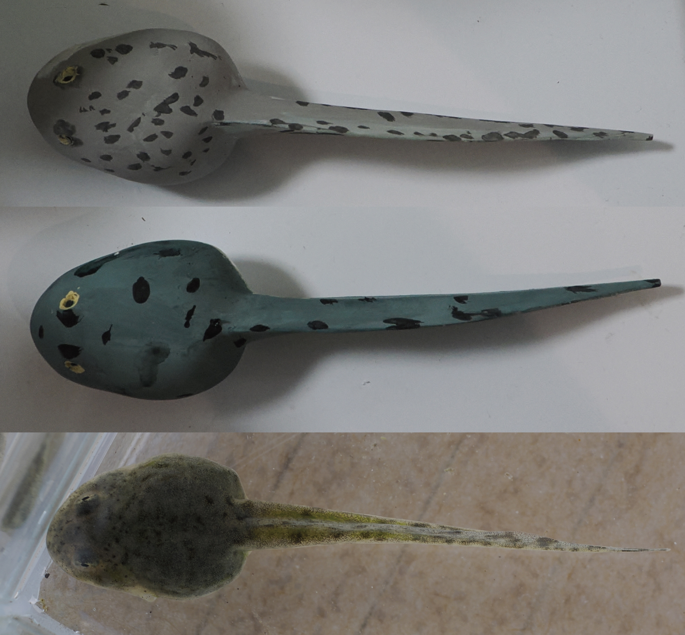
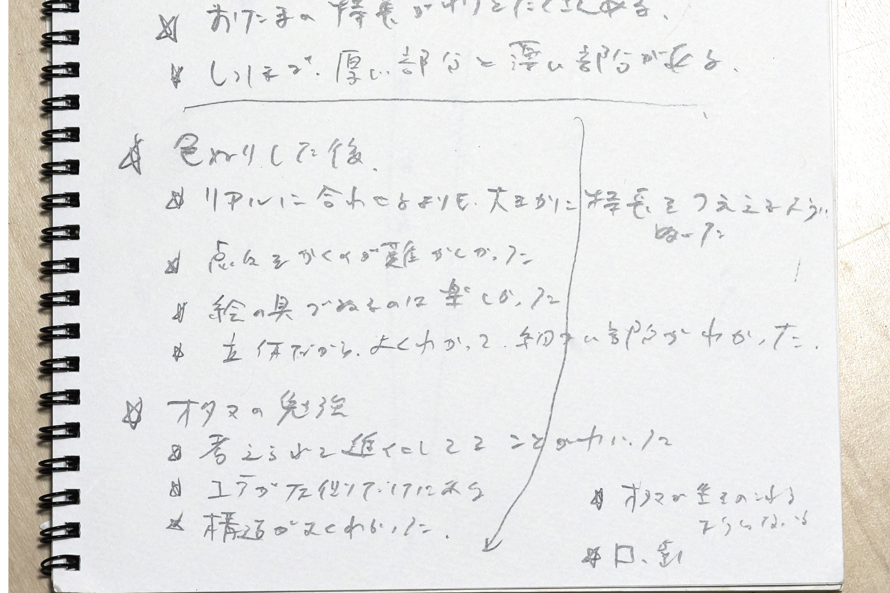

観察からはじまる学びを、子どもたちの手に
本活動では、知識を一方的に伝えるのではなく、 「観察し、気づき、理解する」プロセスそのものを 子どもたちに手渡すことを大切にしています。
オタマジャクシのフィギュアは、その入り口にすぎません。 最終的には、生き物や自然に興味を抱き、 フィールドに出て、自分の五感で命の姿を感じ取る体験へとつながることを目指しています。
試行的な教育実践（家庭での実践例）
現時点では、学校や博物館での正式な教育実践はこれからですが、 その準備として、自身の子どもとともに 家庭での観察・制作・対話を行ってきました。 以下は、その一例です。
① 観察する ―「よく見る」ことから始める
まずは、なによりも実物のオタマジャクシを観察します。 透明度の高い小型水槽を使って、色々な角度から見てもらいました。 子供たちが観察する時間を十分に取ります。 「これは何だと思う？」と問いかける前に、「あれ？これは何だろう？」とか「なんか点々模様がある！」などの発見の声が聞こえました。
※ 正解を教えることは目的ではありません。 「気づいたことを言葉にする」ことを重視しています。

② 描く ― 観察したものを表現する
観察した内容をもとに、さらに観察を続けながら、点描でオタマジャクシの絵を描いてもらいます。 ここではフィギュアの塗装との比較するために、あえて生物学的な一般手法である点描をしてもらいました。
「目はどこにあった？」「しっぽはどんな形だった？」 といった問いが、自然に観察の深さを引き出します。
※ 上手に描くことは重要ではありません。 「何を見て、何を大事だと思ったか」が表れます。

③ つくる ― フィギュアに色を塗る
未塗装のフィギュアに色を塗ることで、 形態への理解がさらに深まります。 今回は100円ショップで購入した筆と水彩アクリル絵具を使いました。
ここでも「この色にするといいよ」など、一切口を出しません。 観察したままを自由に表現してもらうことで、その子が一番気になった部分が浮かび上がってきます。
※ 5倍スケールのフィギュアは、 子どもが塗装をしやすく、細部に目を向けやすいサイズです。


④ 話す ― 気づきを言葉にする
最後に、「何が一番おもしろかった？」と聞いてみます。
子ども自身の言葉で語られる感想は、 大人が想像しない視点に満ちています。
また、オタマジャクシに関する質問が出た際には、実物のオタマジャクシを見ながら説明をします。 細かい部分の説明が必要な場合、私が塗装した完成版フィギュアを使うことで、より理解を深めることができます。
※ 発言は記録しておくと、後から振り返る材料になります。

今回オタマジャクシの観察と点描、塗装を体験した2人から出てきた感想の一部を以下に紹介します。
今後の展開について
現在は家庭での試行的な取り組み段階ですが、 今後、学校・博物館・地域の野外学習などでの 実践を通じて内容を磨いていく予定です。
教育関係者・地域活動をされている方からの ご相談やご意見も歓迎しています。
教育利用について相談する
観察の楽しさ
点描の難しさ
表現する楽しさ・工夫
気づき・理解の深化
次の行動への意欲